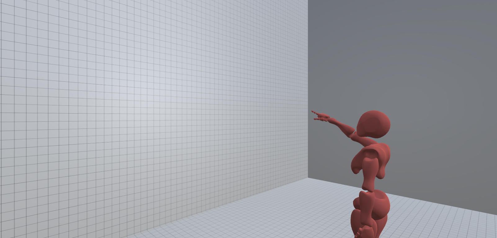

Please read the following carefully. Afterwards, you will be directed to the study application. If at any point you have technical issues, please email Brett Benda at brett.benda@ufl.edu.
Before beginning, click on the following icon at the bottom of the application to make it full screen. You can use ESC to minimize the application when you are done.
You will be presented with an avatar making a pointing gesture. An example is shown below.
You will observe the pose of the avatar and try to figure out where it is pointing on the wall.
Click on the wall to select where you think it is pointing. A red ball will appear showing where you selected.
You can edit the selected location as many times as you want by clicking additional times.
When you are satisifed with your answer, press the "Submit" button at the bottom of the window.
You must select a location on the wall before you can submit.
Focus on being as accurate with your selection as you can, but also try to complete the task quickly.
You will then repeat this process (observing an avatar and selecting a location) for many different avatar poses and styles.
When you are finished, you will be prompted to download a log file and take the final questionnaire. The questionnaire should open automatically in your default browser, but if it does not a link will appear on the application webpage.
Complete the survey that opens and follow its instructions.
At the end, you will be asked to upload the log file you downloaded.
After completing the questionnaire, you are done! You can close the survey and any other study related web pages. If participating for credit, you will be directed back to SONA from Qualtrics and receive a confirmation message.